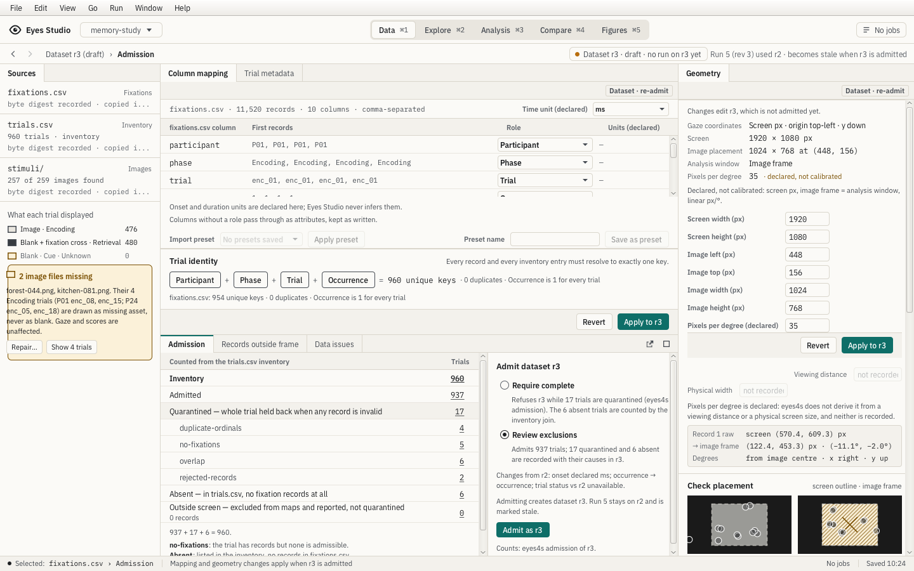
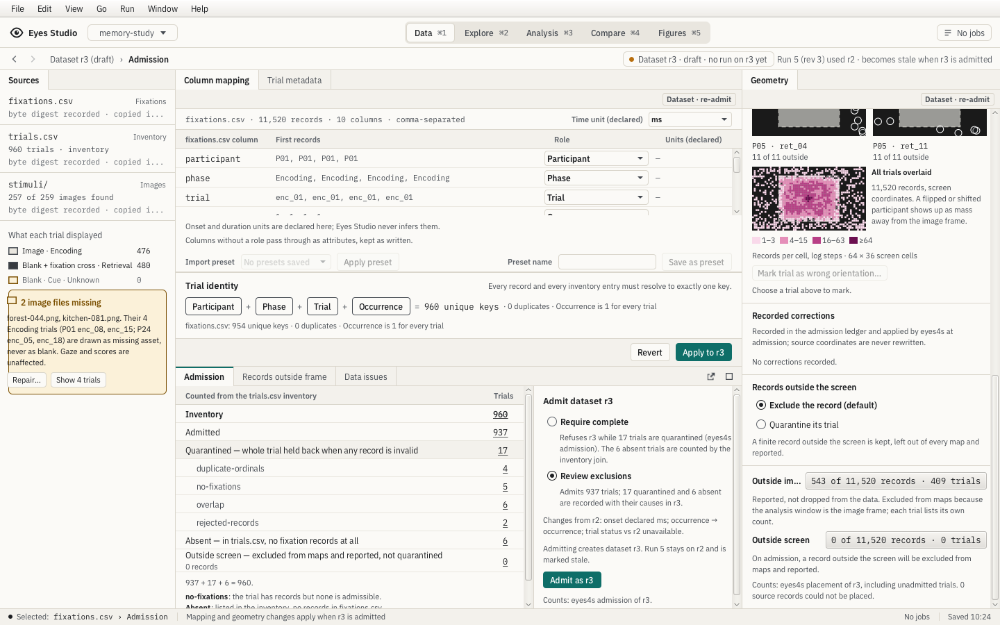

Data


| Check | Disposition and evidence |
|---|---|
| shell | accepted deviation · Native app/context/status rows are 44/32/24 px; every dock header is 28 px (metrics.json). Draft banner is present in Compare/Figures as appropriate. OS title chrome is outside the app capture. The headless JavaFX menu row is 24 px; the reference draws a 28 px macOS title bar. Interactive dock headers retain their qualified pop-out/maximize controls. Dock division follows actual component minimum widths, not browser pixel placement. |
| freshness | match · t1 shows Dataset r3 draft/no run on r3 yet and Run 5 (rev 3) used r2/becomes stale on admission. Capture uses Review exclusions without admitting or changing scientific inputs. |
| mapping | accepted deviation · Actual ten-column fixture, onset/duration declared in ms; Ordinal and optional Sample count roles are available. Mapping and geometry carry Dataset · re-admit. Mapping-bottom capture exposes the lower roles. Reusable served import form scrolls, with explicit global time units and Apply controls. The illustrated eleventh source column is absent from the actual CSV; an extra source field is never fabricated. |
| identity | match · Participant + Phase + Trial + Occurrence resolves 960 inventory keys and 954 fixation keys, each with zero duplicates. The control checks and refuses ambiguous keys; occurrence is explicitly one for this fixture. |
| ledger | accepted deviation · 960 = 937 admitted + 17 quarantined by cause + 6 absent; each count opens its served trials. Outside-screen records are reported separately. Review-exclusions route and the inventory origin of absence are preserved. The application groups causes in backend order and states that the r2 status comparison is unavailable. The fake backend has no historical r2 ledger, so the illustrated four changed statuses are not invented. |
| geometry | accepted deviation · Editable screen 1920×1080, image 1024×768 at (448,156), 35 px/degree declared/not calibrated. Physical size and viewing distance are explicitly unrecorded. Image-centred degrees are x right/y up. Geometry-bottom includes policy, counts, overlay and orientation controls. Component tests pin record 7214 and 543/11520 outside-window records in 409 trials. S26 mounts the real editable geometry form in place of the compact board facts. Lower controls require scrolling at 1440×900. The initial worked example is the first served record rather than the board’s selected record 7214. No geometry/calibration or timing is inferred. |
| assets | match · 257/259 found; forest-044 and kitchen-081 are named. Their four encoding trials are hatched as missing assets, never blank. Repair and trial navigation are present. |
Supplemental states / intermediate regression evidence
